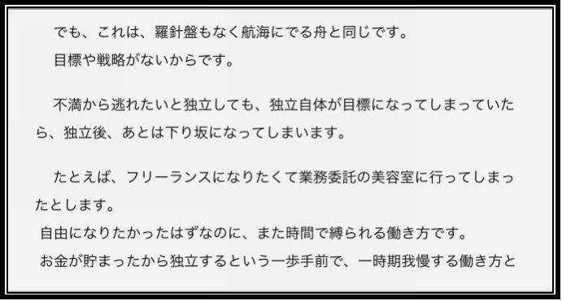
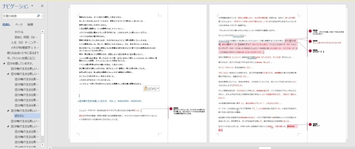
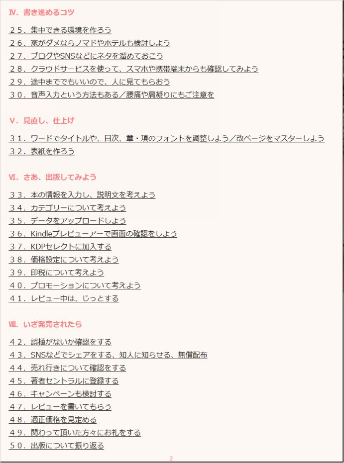

| Kindle本を出すにあたり大事なこと プラス20 (大隈文庫) | |
| 中野 有紀子 | |
| (2018) | |
～プラス２０～
内容
１．「はじめに」と「終わりに」は何度でも推敲してメッセージを絞る
７．わかりにくい言葉はないか（脚注や、語彙レベルに注意する）
はじめに
こんにちは。女性の在りたい姿を応援する、エバーガールの中野 有紀子です。
前回の『Kindle本を出すにあたり大事なこと50』について、多くの方にお読みいただきお役に立てて嬉しいです。あの本は、発売と同時に無料キャンペーンを実施し、多くのKindle市場の読者さんたちの目に留まり、無料だけでも400部出荷、そしてその後もロングセラーとなり、Amazonのベストセラーにも認定されています。また、Amazonレビューでも高評価を多数いただき、実際にその本を読んで「迷うことなくKindle出版ができた！」、「思ったよりも簡単だとわかり、挑戦しやすくなった」などのお声をいただいています。
私自身気に入っている本であり、今から出版を目指そうという方にお勧めできる最短のフロー、50に絞ってお伝えしている良書だと自負しています。さらに、前作の行間に詰めた思いを、より丁寧に深堀したものが、本書『Kindle本を出すにあたり大事なこと～プラス20～』になります。
あれから、 さらにKindle本を出版したり、Kindle出版の講座、他の方の個別の企画・編集・校正のお手伝いをしたりする機会も増えました。校正・校閲についても、現役校正者の方から学ぶ会も設け、理解を深めました。このように、多くのKindle本に携わる中で、「さらにこれは伝えておいたほうが良い」と思ったことについて、本書にまとめました。
『Kindle本を出すにあたり大事なこと50』 を読み終えて、最終校正に入っている方。1冊目は出したけれど、2冊目はもっといい内容にしたいとお考えの方。2冊目、3冊目と、どんどん出版を 目指す方に是非お読みいただきたいです。
それではさっそく本編に入っていきます。本書の構成も、読みやすいように各項目を目次にしています。目次を読み返すだけでも、大事なことが分かりやすいように配慮しています。出版に向けて忙しい中、必要な部分を随時ピックアップしてお読みください。
Ⅰ．企画・校正の話
まず、多くの方に一番大事であるとお伝えしているのは、ターゲットについてよく考えるということです。 この本は誰に向けて書いているのか。 本の内容に関する対象読者の知識レベルは どれくらいなのか。それによって言葉選びも変わりますし、普段どういう本を読まれている方々が対象なのかによって、漢字・ひらがな・カタカナの割合も考えなくてはなりません。
例えば、専門書でその分野の方しか読まないのであれば、注釈は最小限でいいでしょう。一方、専門分野の入門書ならば、細かく脚注を書いておかないと、読者は置いてきぼりになってしまいます。
高校生くらいから読んでほしいのならば、活字離れ現象もありますし、ネットでの読書や情報収集にたけていると思いますから、ブログなどのように行間を開けた本のほうが読まれやすいでしょう。情報を広く浅く収集したい方向けであれば、1冊の量が多すぎると消化不良になってしまうので、分割してシリーズ化したほうが、読み切ってもらいやすいです。
一方、中高年の読書の虫のような方からすると、専門的な深堀がないと、「物足りない」という読後感になるかもしれません。
あなたの書く文章が、どういう人向けなのか。
それによって、難易度を変え、注釈を加える必要があります。とかく人は自分の得意分野については雄弁になりがちで、筆も進むでしょう。しかし、その内容は本当に読者にとって必要不可欠なのか。あなたが最初に想定した読者の目線に立ち、推敲することが必要です。同じようなジャンルで人気の本などをチェックしてみるのも役に立つでしょう。もちろん、この本も参考にしていただけたら幸いです。
では、一つ一つ解説していきます。
１．「はじめに」と「終わりに」は何度でも推敲してメッセージを絞る
本を書いてみて、「はじめに」と「終わりに」は、とても大事であると知りました。ある方が、「『終わりに』を先に読んだよ～」と私に教えてくれたことがありました。
はじめに ・・・・
この本にはどういうことが書いてあって、どういう人に読んでもらいたいと思っているのか
終わりに ・・・・
この本を通じて一番伝えたいことは何だったのか、読者が得られるものは何なのか
という内容が必要です。
ここが大きくブレていなければ、読者と書き手の思いのミスマッチは防ぐことができます。
では、それぞれ解説します。
【はじめに】
セールス面でいうと、Kindle本を出版する際に「サンプルを読む」という機能があります。私たちはたいがい無名の作者ですから、おそらく読者はサンプルをダウンロードして、読んでみてから、買ってみたいかどうか判断をされるでしょう。このサンプルページでだいたい「はじめに」の章まで読んでもらえるのです。ここでしっかり、
自分は何者であるのか（無名ですから）
この本には、何が書いてあるのか
この本を読むことで、何が得られるのか
語彙レベル、書き手の筆力、知識
などをプレゼンテーションしましょう。このプレゼンテーションがうまくいかないと、そもそもお金を払ってKindle本をダウンロードしてもらえません。どんなにいい内容が中に書いてあっても、読んでもらえないのです。
【終わりに】
およそ5章にまたがりあなたの本を読んでいただいた読者の方に、お礼とまとめをお伝えしましょう。この本を読んでもらったことで、読者の胸にこういうものが残ってほしい、という内容です。多岐に渡った話の締めくくりですね。
ここで全く本章と関係のないことを書いてしまうと、読者の読後感が悪くなります。「終わりに」から読むという人もいます。結論を読んでから各章を読み進めるというのは、とても合理的な方法です。
２．ひらがな・漢字・カタカナの割合（耳読も考慮する）
理想的なひらがな・漢字・カタカナの割合はどの程度でしょうか。一般的に新聞などは固有名詞が多く、論調文で、漢字が多いです。一方、今の時代は新聞が苦手、という方も少なくなく、好まれる読み物には、それぞれの適切な割合がありそうです。
私が基準にしているのは、以下のようなことです。
・目で読んだときに漢字や言葉が難しすぎて、読者が考え込まずに済む書き方を心がける
・漢字が続くと、自然と硬い文章になりがちなので、（優しい言葉を合理的にまとめたものが漢字ですから）漢字の割合が高いようであれば、割合を見直す
・一定のルールをもって、ひらがなでいい部分はひらがなに置き換えるようにする
例を挙げます。
例）どのような内容でも承ります／どんなことでも承ります
有難いと思う／ありがたいと思う
それぞれの文章から受ける印象はどうでしょうか？
耳から聴くと、どちらも同じようになりますが字面にすると、印象が変わります。
※注意するべき例
お土産を頂いて／お心づかいをいただいて
「いただく」 については、漢字で「頂く」と書き表すのは、「食べる・飲む」の謙譲語と、「もらう」の謙譲語として使用する場合です。ひらがなの「いただく」の場合は、「ご覧いただく」「お越しいただく」など補助動詞としての役割のときに使用します。心遣いをいただくの場合、一般的には、ひらがなです。混在しやすい言葉なので使い分けを注意しましょう。
『「ひらがな」で話す技術』 （サンマーク出版）西任暁子著 によると、講演やスピーチ、会話などではひらがなの言葉を多く使って、耳からスムーズに脳に渡り、聞き手に負荷を与えず理解できる言葉を多くしたほうがいいそうです。
かといってひらがなが多くなってしまい過ぎてもメリハリがつかず、絵本のようになってしまいます。適度な量を心がけましょう。カタカナが多すぎると、やんちゃな印象になります。ここぞという時や、外来語などを表現するときにカタカナを利用しましょう。
固有名詞を除き、NHKのニュースが分かりやすいのは、国民全員が理解できるように、ひらがな語を選び抜いているからです。また、民放のテレビ局の番組では、流行りの言葉などが良く使われており、私なんかはついていけず、チャンネルを変えてしまうことも。NHKを観ると、安心します。そんな経験はありませんか？
このことに関して、以下、野口悠紀雄氏の 『超・文章法』 （中公新書） P.202 からの引用です。
"原則的には、名詞は漢字、動詞の語幹も漢字、副詞や接続詞はひらがなとする。漢字とかなの比率が、適切になるようにする。漢字が多いと、堅苦しく重い印象となって読みにくい。他方で、かなが多すぎると、幼児的印象を与える。
三種類の文字を使えるのは日本語の特徴なので、十分に活用しよう。漢字をキーワードとし、カタカナで変化をもたせ、アイキャッチングを狙う。
ダラダラした表現は、漢字を用いてひきしめる。漢字は、速読を可能とする手段にもなる。例えば、「メッセージをはっきり決めることは、文章を書くのに先立って必要なことである」より、「メッセージの確定は、文章執筆前に行うべきである」のほうがよい。"
読者の方のイメージが湧きやすいよう、違う表現の例を挙げます。
例）
米国・アメリカ
あなた・貴方・貴女・アナタ
また、『「ひらがな」で話す技術』では、
第一章から参考になる部分として、
"話していて「気持ちいい」と感じたら危険信号"
第二章では、
"ひらがなが多いとわかりやすい"
"使う言葉は「簡単すぎる」がちょうどいい"
という項があります。
理由を抜粋すると、ひらがなは古い日本語であるため、漢語である漢字や、外来語の表現に使うカタカナよりも日本人により馴染みがあるからだそうです。
古い日本語とは、 やまとことば 。誰にでもすぐにわかる、丸い言葉を使うことが大切、と。これは話す技術の説明の本ですが、書き言葉でも当てはまると私は考えています。誰かにとって分かりにくい言葉をあえて使うよりも、誰もが分かる簡単な言葉を思い切って使ったほうが、読者は安心するのです。
難しい言葉には、注釈をつけて読者が読めるような配慮をもって、書いていきたいものです。テレビでも、分かりにくい言葉や強調したい言葉は、テロップをつけて表現するなどの工夫がされていますね。視聴者を置いてきぼりにしないための工夫です。
３．半角数字、全角数字、漢数字、英数字
文中に数字を使うことも多いと思います。半角と、全角は統一されていますか？
カッコなども、全角カッコと半角カッコが混ざりやすいので慎重にチェックしましょう。数字についても、「１９９８年」、「2001年」などとなっていませんか？
私もこの本を書くにあたり少し迷っていますが、Kindleと書くか、端末を表すKindleと書くか、などのルール決めの問題もあります。
1人で暮らしているときは／一人暮らしをしているときは
などは、どちらも正しい日本語ですが、数字が重要な時は算用数字、文章中に自然に出てくるときは漢字表記とする、など、その本の中での決めごとを作って統一するとよいでしょう。
４．『』・「」・（）の使い方
『』 の使い方は適切ですか？正しい『』の使い方は、かぎ括弧の中にかぎ括弧を入れるケースと、書籍・雑誌・新聞や作品集、映画のタイトルを示すときです。
「」 の間違った使い方も気になるところだと思います。現代では、web文章では「」の中に句点は打たない方がいいという流れです。
１．「おはようございます。」と言ってみると思いがけず反応があった。
２．「おはようございます」と言ってみると思いがけず反応があった。
２．の方がベターです。このように使うと、
「おはよう」、「こんにちは」などの挨拶を必ずしましょう。
などの連続する場合も読みやすいです。学校で習ったのは、句点はカッコの中に打ちましょう、というやり方です。どちらも日本語としては、間違いではありません。
（） は、単語の読み方、引用の出典、注記など、補足をする時に使う記号として使用しましょう。それぞれ半角・全角にも注意しましょう。
（参考URL ： 昭 和 2 1（ 194 6 ）年３月・文部省教科書局調査課国語調査室（旧字体 ） ）
http://www.bunka.go.jp/seisaku/bunkashingikai/kokugo/mondai/mondai_08/pdf/sanko.pdf
「」を強調の意味で多用しがちな方がいらっしゃいます。文中に必要以上に「」があるとうるさいので、どうしても強調したい場合は、 太字 にするのが最近の主流です。
例）
類義語を探すときに、ネットサーフィンをすることをお勧めします。いくつものサイトを見てみることで、自分に「ピタッ」と来る表現に出会えるでしょう。
類義語を探すときに、ネットサーフィンをすることをお勧めします。いくつものサイトを見てみることで、自分に ピタッ と来る表現に出会えるでしょう。
それから、「三点リーダー（...）」と「ダッシュ（―）」の使い方です。
余韻を示したり、補足のための区切りを示したりするときにたまに使いますが、これらは基本的に1つで使うことはありません。基本的に2つ重ねて使いましょう。「......」や「――」という風になります。
５．縦書きにしたい場合
Kindle本を縦書きにするには、「ワードの文字列の方向」から簡単にできます。
普段縦書きに慣れていない方も多いでしょうから、先に横書きで書いておいて後から変換すると簡単です。
その場合、漢数字やカッコの使い方、英語の表現などに気をつけましょう。どちらがいいのか、という相談を受けることもありますが、どちらでも大丈夫です。ただし、私は縦書きに変えてからの数字や英語の変換作業が面倒なため、横書きで出版しています。
皆さんは、ブログやメールなどを書くときに、横書きの表現に慣れていますよね。本は縦でなくてはならない、という固定観念を捨てて、書きやすい横書きでよいのではないでしょうか。読者もそういう視点で読めばすんなり受け入れてくれます。
私が「横書きにするぞ」と決めたのは、人気ブロガーであるちきりんさんの最初のKindle本、『「Chikirinの日記」の育て方』が横書きであったことがきっかけであり、決め手でした。著作上では、あの本は相当数売れたということです。それを知り、出版社が出す書籍は一般的には縦書きが多いですが、Kindleに関しては必ずしもそうでなくても読者はついてきてくれる。そう確信しました。この本を読んだことで、もともとブログを書いていた私が、本を出版する勇気を得ることができ、イメージを具現化できるようになったのです。
皆さんの決め手のご参考になれば幸いです。
６．主語、述語の入れ替わりをチェックする
それから、読者に正しく意味が通じやすいように、文法もシンプルに使っていくようにしましょう。よくあるのが、文章が長くなりすぎて、文中で主語が入れ替わってしまうことや、主語がないことなどです。
誰の考えなのか、誰にどうしてほしいのか。読者が理解しやすい言葉で表現していきましょう。
＜書くときに意識しておきたいポイント＞
• 主語、目的語を省略しすぎていないか
• 一文の中で主語が変わっていないか
• 指示語＝こそあど言葉の指し示す先はわかりやすいものか？
悪い例）この前行ったところはとても美味しくてよかったので、また今度行きたいと考えています。
この表現では言葉足らずで主語が分かりません。
どこですか？
何が美味しかったのですか？
今度誰と行きたいのですか？
と読者が色々気になってしまいますね。
良い例）この前、私が夫と行った駅前のカフェは、コーヒーがとても美味しくて、二人とも楽しみました。夫はまた行きたいと言っています。
という風に書いてみてはいかがでしょうか？
７．わかりにくい言葉はないか（脚注や、語彙レベルに注意する）
一般読者向けの文章に、専門用語や、学術用語、読みが難解な言葉をあえて使ってはいませんか？
ターゲットに合わせて、できるだけ分かりやすく、一般的な言葉を選びましょう。
どうしても専門用語や固有名詞が必要で、それが読者にとって一瞬で理解しにくいものである場合は、注釈などを加えるように工夫をしましょう。
分かりやすい例文）
彼は宗教上の理由でベジタリアンなんです。
――これでもターゲットによっては、（菜食主義）をつけてもいいかもしれません。
注釈が必要な例文）
彼は宗教上の理由で、ラクト・ベジタリアン※ なんです。
※(Lacto-vegetarian) 乳菜食者
これはベジタリアンが一般用語だとした場合に、その中の細かい分類のことは専門用語であり、一般的には分かりにくい、という場合に注釈を足した例です。あえてこの言葉を使うならば、詳細な分類表まで書くとなお親切でしょう。
読者が理解できない言葉がある場合、読み進めることを難しく感じてしまいます。
８．表現の幅がある文章の方が美しいし、読者に優しい
読者のために、統一感のある文体で書く必要がある一方で、全く似たような表現が続くとそれはそれで文がダラダラしてしまうという問題があります。ですから、文章の中で、読者の「次に著者は同じことをどういう表現をしてくれるのだろう」という期待感に応えましょう。
『Kindle本を出すにあたり大事なこと50』の項目23. 「ワードの文字カウント機能や校正機能を活用しよう／校正などを手伝ってもらう人を探そう」 ではワードの表記ゆれ機能の活用について説明しました。これは、本の中でこのような表記ゆれを潰していきましょう、ということです。
統一すべき例）
わかる・分かる
２歳・2才
子供・子ども
いわゆる・所謂
フィレンツエ・フィレンツェ、
ただし、統一するべき文章がある一方、逆に表現の幅を広げた方が文章として美しく、知的になる文章もあります。
表現の幅を広げる例）
思う／思います／思ったんです
という表現を、
思うんですよね
そう感じました
であるべきだと考えます
という印象になります
と言い換えることで、用いる言葉自体は難しくなくても、表現の幅が広がり文章が豊かになります。接続詞も、同じ言葉が続きやすいので気をつけましょう。
いつでも
どんなときでも
このようなときでも
ずいぶん
かなり
だいたいにおいて
口語でも、文章でもついつい自分の癖で多用しがちな表現があります。
「あれ？この言葉、ちょっと多いかな？」と自分や校正者の方が気づいたら、Windowsの場合はキーボードの Ctl+F を押して、（Macの場合は、表紙 → サイドバー → 見出しマップウィンドウ）ナビゲーションウィンドウを開き、件数を確認しましょう。
ここで調べてみると、なんと私は12,000字中、12件も「しましょう」を使っていました。ちょっと多いと思ってはいたのですが、今気づくことができて良かったです。
もちろん同じ言葉を使ってはいけないわけではないのですが、文章の近い場所で使いすぎている場合は、類義語の言い換えに挑戦しましょう。
スピーチなどでも同じことの繰り返しが気になるように、文章でも同じですから。
９．改ページ、改行に再度注意する
改ページ
改ページ作業をするときは、漏れがないように、私はこのように画面を開き、行っています。写真があるときもページが乱れやすいので、気をつけましょう。
＜Wチェックのポイント＞
①表示 → 複数ページ → 複数ページ → ズームの調整 → 一覧で開く
②PDFにしたり、KDPのプレビューアー画面で実際に改ページされているかを確認したりする
これを事前に行えば、出版されてから修正する必要がありません。
改行
改行にもポイントがあります。
これは、先ほどの「７．主語、述語の入れ替わりにチェック」という文章です。
（例１）適切な改行や箇条書きしている場合
（例２）改行や箇条書きしなかった場合
（例１）の方が読みやすいでしょう。
同じことを書いていても、読み手の理解度は、この行間の開け方にも関係してきます。
皆さんは、プレゼンテーションやスピーチをするときに、間合いを取っていますか？
相手の目を見てうなずきを確認し、理解度を計りながら、話を進めるようにしていますか？
文章の行間においても同じです。適切な間合いを取ることが重要です。文字においても、この間合いのおかげで、読み手が内容を理解し、受け止める時間を与えることができるのです。
紙の本しかなくて、詰め詰めの文庫本が好まれていた時と今では、文章に対するニーズも異なります。話が変わるときには段落を区切り、そこで読者が一息つけるような、そんな読みやすく、わかりやすい文章が好まれています。
ですからぜひ、最終校正段階で、行間や箇条書きについて確認し、こだわることをお勧めします。Kindle出版のサポート案件でも、私が最後に強くお伝えしていることです。
【プチコラム１】段落変更のときの一マス目
改行すると、Kindle本では自然と冒頭に半角程度のマスが空きます。原稿用紙に書くように、自分で一マス開けない方が自然な文章になります。
【例１】冒頭に一マス開けなかった場合
ただ改行しただけでも、自然と半角程度にマスが空いており、段落が違うことが分かりやすい。
【例２】冒頭に一マス開けた場合
一マス開けると、実質1.5マスほど空くことになり、やや不自然になってしまう。

１０．著者ページなどのメンテナンスを怠らない
奥付部分の自分のプロフィールなども随時メンテナンスしましょう。
著作が増えたり、ホームページやブログを引っ越したり、活動を変えたりすることもあるでしょう。更新をお忘れなく。
Kindle本の著者が使える「著者セントラルページ」の情報も、最新の内容か、定期的に確認しましょう。私の場合は、この本で著作が7冊目になり、メンテナンスも大変なので、今後は他著作の紹介は、著者セントラルページだけに留めていくことも考えています。
【例１】著者奥付 著作紹介
【例２】著者セントラルページ
著者セントラルページには、著作の一覧やプロフィール、イベント情報、動画などを掲載することができます。積極的に活用しましょう。

１１．引用・参考文献の書き方
書籍から文章の引用をする場合は、
・書籍名
・著者名
・出版社名
・発行年月日
を入れる必要があります。少なくとも、書籍名と著者名は必ず入れます。もちろん引用は最低限に留め、極力自分の言葉で書くようにしましょう。
私もこの本で書物からの引用をしていますが、私の書いた文章ではなく引用だと分かるように
"（引用文）"でくくり・斜線にし・グレーの文字に変える
という工夫をしています。
参考文献には、本を書く上で読み、参考にした本を書きます。
その場合の表記方法は、以下を参考にしてください。
【参考文献の表記方法】
著者名・発行年・タイトル・出版社 を漏れなく規則的に入れる。
例）
■『「超」文章法』（中公新書）野口悠紀雄 著 2002年10月1日発行
【プチコラム ２ 】肖像権と著作権について注意する
写真についても、ブログと同じように肖像権や著作権に注意しましょう。インターネット上で使えるフリー素材を活用している方もいらっしゃると思いますが、紙の印刷物においてはNGとしていることもあります。Kindle本もこれに準じていると考え、挿入用や表紙の画像を選んでください。
１２．校正をしてもらう時に便利なこと／校正時の留意点
校正・校閲は自分でする場合、一晩寝かせてもう一度読むことが重要です。
自分で校正するだけでも気づきは多いですが、校正校閲者を依頼することも大切です。校正をしてくださる方は、一番目の読み手であり、書き手のパートナーとなるような信頼できる方にお願いしましょう。第三者にもお願いすることで、思いがけない指摘をしてもらえ、文章が引き締まります。
校正者の方には、指摘や批評をするのではなく、 著者と二人三脚で文を良いものに磨き上げていくお手伝いをする、縁の下の力持ちである というスタンスで臨んでいただきます。
他者に客観的に見てもらうことで、自分の文章の改善ポイントに気づくことができるでしょう。
校正を何度も受けることで、だんだん校正箇所が少ない文章が書けるようになります。
そのためには、校正者だけではなく、一般の方でもいいので、たくさんの人に読んでもらって感想を言ってもらうことが文章上達への近道です。プロに外注すると、なお安心です。
どうやって校正してもらうのか
ワードのコメント機能を活用することで、紙面のやり取りをしなくても効率的に校正をしてもらうことができます。
Googleのサービスである、ワンドライブ・グーグルドライブや、マイクロソフトのサービス、ドロップボックスなどのクラウドサービスなどを使うと、原稿の更新や送信もスムーズです。

こちらは、時差も距離もあるイタリア在住のみやまえアキエさんの『イタリア発 自分軸で生きる美しい女性たち』（2018年4月末出版予定）の校正原稿です。Facebookのメッセンジャー機能を使ってもファイルのやり取りができます。クラウドサービスや、メールを使うこともあります。校正の担当がダブルチェック、トリプルチェックをしていますし、インタビュー記事の部分では、インタビューを受けたご本人にも内容を確認していただいています。画像を多く挿入している場合は、メールで送ることが難しくなるため、クラウドサービスを活用しましょう。
校正された文章は、スマホから開いてKindle本のように読むこともできます。その際、コメント欄は表示されないので、Pdfにしてからファイルを送ると、スマホからでもコメントを確認することができます。
校正時にあると便利なもの
同時代に生きている人たちが対象読者なので、『記者ハンドブック 新聞用字用語集』『常用漢字表』『表記辞典』『言葉に関する問答集』などが参考になります。
また、著者自らたくさんの本を読みこみ、今好まれている文章や本はどんなものなのかを研究し、自分と比較することも大切です。
校正をする場合の心構え
こちらは校正について学ぶ会を主催したときに、熟練校正者のさやこさんから教えていただいたポイントです。
・必ず誤りがある、と思って校正すること。
・校正者自身も見落とす可能性があるため、日や時間をおいて確認すること
・可能ならば複数人で複数回確認するスケジュールを立てること。
・自分の常識が他人にとっては常識ではない可能性があることを心に留めておくこと。
・わからない場合は必ず原典・辞書に当たって根拠を得ること。
・ゴールが何か確認すること。校正時に守るべきルールを逸脱しないこと。
最低限見てもらった方がいいポイント
校正・校閲を依頼するときに、最低限でもこの項目をお願いしましょう。
この画面をスクリーンショットするなどして、依頼してください。
• 誤字脱字 →しかっり、承わります、でし。
• 一般名詞か固有名詞か。固有名詞なのに一般名詞で使われているものはないか
• →宅急便、セロテープ
• 表記間違いがないか →製品名、駅名、市町村名、名前など固有名詞は必ずチェック。
大文字小文字も区別
• 方言ではないか →焼き飯？チャーハン？
• 修飾語の位置は適切か
• 句読点の位置は適切か
→「ここではきものをぬいでください」問題。読点の位置で文の意味が異なる場合がある。
【プチコラム ３ 】校正と校閲の違い
校正と校閲の違いについて解説します。
• 校正は文章の誤りを無くするもの
• 校閲は文章の正誤を判断し、読み手にわかりやすく伝わるかという観点からチェックするもの。添削により近いのが校閲。
校正者と校閲担当者の見方の違いの例
「上野動物園にウサギが１０匹いる。」
• 校正 ：修正前の原稿と照らし合わせて、表記の間違いがないか、句読点の抜け漏れ・位置間違いがないかをチェック
• 校閲 ：上野動物園に本当にウサギが１０匹いるのかを確認。また、１０匹という数え方でいいのかどうか（１０羽じゃないの？）ということについて辞典を使ってチェック。助詞が「に」ではなく「には」にしては？と提案するなどを行う。
１３．何人かの方に事前に読んでもらい、意見をもらうこと
校正者の立場として、自分以外の人に読んでもらうのとは別に、ターゲットに近い知人に事前に読んでいただくことも大切です。このステップを踏むことで、次のような効果が得られます。その際に、「細かい校正や校閲はしていただかなくて結構なので、全体的な感想や、分かりにくかったところなどを教えていただけますか？」と聞くと、相手の方も引き受けてくださりやすいです。
・ターゲット目線で分かりにくい表現はないか、誤解を招く表現はないか、気づいてもらえる
・面白いか、面白くないか、率直な意見をもらうことができる
・意見を参考に、文章をそぎ落としたり、説明文を足したりすることができる
・反響があることで、モチベーションが湧く
メリットばかりでデメリットがほとんどないため、信頼できる方にお時間をもらいお願いしてみましょう。
Ⅱ．いざ出版
見直し、第三者からの校正、校閲、読後感をいただいて、いざ出版しました。
お知らせをすることで知人を中心に最初はある程度買ってもらえるでしょう。しばらくすると、ピタッと売れ行きが止まるときが必ずやってきます。この章では、そのときに焦らないで著者自身がやるべきことを、一つ一つ丁寧に解説していきます。
１４．見直しは、当たり前／検索ワードを確認する
いざ出版されてからも自分の本がちゃんとグーグル検索に上がっているか、Amazon検索に上がっているかを確認し、必要に応じて、キーワードの設定を変えてみます。
その際参考にするのに、web検索した場合のこのような画面がお勧めです。
技術士・二次試験で検索をかけてみた場合の事例です。
【Web検索画面の関連するキーワードという欄】
こちらは、Amazonで検索した場合です。このように類似本がたくさんあることに気づきます。
『Kindle本を出すにあたり大事なこと50』でも説明しましたが、このように出版時にKDP画面で本のタイトルにない検索ワードも設定することができます。
思ったように検索でヒットせず、同じ言葉のライバルが多すぎる場合は、このキーワードに関しても見直しをかけてください。ちょっとした調査と改善で本が売れる確率が変わります。
例えば私は、小学校の広報部のPTA役員をしていて、そのことを書いたブログの閲覧数が多いのですが、それもこのように、「どういう言葉で検索されることが多いのか」ということを検証することができます。ただし、ブログやホームページはグーグルアナリティクスなどでアクセス解析できますが、Kindle本に関しては、データを把握できません。あくまで販売状況と、検索順位で確認するということになります。（ここはAmazonに今後、情報開示を頑張ってもらいたいところです）
１５．レビューはありがたく頂戴する
出版して、購入していただき、Amazonレビューがついたら、飛びあがるほど嬉しいですよね。
ところがレビューをいただき、評価が高くない場合は一瞬がっかりしてしまうこともありますがへこまないでください。
正直な意見は改善点を教えてくれているということ。「ここがこうだったら、☆5つだったのになぁ」と具体的に指摘してくれているのです。これはありがたく参考にし、自分でも「確かにそうだな」と思うようであれば、改訂版に取り入れましょう。実際私もいくつか参考にし、改訂しました。より良い内容になったと思います。一方、本来のターゲットでない方にたまたま選んで読んでもらった場合には、「ピンとこなかったなぁ」という悪い評価がついてしまうことがあります。そうなると、読者にとっても著者にとっても不本意なので、商品説明文でしっかりと内容や、この本を読んで得られるだろう知識などについて書いておきましょう。
「内容は秘密。買って読んでみてからのお楽しみですよ！」というスタンスでは、買ってもらえませんし、もし読まれたとしても読後感が悪くなることも。お互いにとって残念な結果になります。
Amazonレビューは著者セントラルページから確認することができます。
Amazonのレビュー画面でお礼コメントはできませんが、心の中でお礼を言いましょう。
それから、私の場合、Amazonレビュー以外のレビューも定期的にインターネット上で探しています。ありがたいことに、書評サイトにも感想があがっています。
書評を目にすることで、著作の改訂をする場合の参考になりますし、次回作のアイデアが湧きます。良い評価を見ることは、次回作の執筆や、販売促進のモチベーションを上げる、などの効果があります。
ブログなどで書評を書いてくださっている方に対しては、ツイッターなどのSNSで紹介したり、直接お礼のコメントを書いたり、ブログ記事で感謝を述べてもいいですね。
ここでいただいたレビューも同じように参考にし、改訂や次回作に取り入れていきます。
１６．改訂した場合に注意すること
そのように改訂をした場合は、商品説明文や、本の末尾にその旨を明記しましょう。表紙に書き加えても分かりやすくていいですね。この著者は、しっかり内容を更新し、読者のためになる情報提供をしているという姿勢が高評価につながります。誤字脱字程度の改訂であれば、Kindle本に関しては、あえて改訂版として明記しなくていいでしょう。内容や品質に大きく影響する場合のみでよいです。
電子書籍であるKindle本であれば、紙の本と違って表紙の差し替えも簡単にできます。出版してから自分の本を検索してみると、同じキーワードのライバルの本と自分の本が比較して購入される、という事実を目にするでしょう。
客観的な視点に立ち、同じような条件、同じようなタイトル、内容で、自分の本が市場で魅力的に映っているかどうか、確認してみてください。
◆思ったよりも色に迫力がない
◆内容ほどの品質が表現されていない
◆中身がわからなすぎるから帯をつけてみようか
◆ターゲットの性別、世代の人が思わず中身を読んでみたくなる色はどんなものか
などの視点で、チェックしてみて、必要があれば改訂するとよいでしょう。
Kindle paper white端末を使っている読者は白黒で読むため、表紙の色の濃淡にも気をつけましょう。
私の本、『メルカリでお片付け～のこす・売る・送り出す～』も内容の改訂や、シリーズの自作発行の際に2度、改訂しています。
こちらが最初の表紙画像です。
これが、第三版のときに内容と一緒に改定した表紙画像です。
受ける印象が変わることがお分かりになりますか？
『メルカリでお片づけ～のこす・うる・送り出す～』（草案）
最初は実用書っぽく、青を基調にしました。
『メルカリでお片づけ～のこす・うる・送り出す～』（初版）
再考し、実用書なだけではなく、精神的にもすっきりしますよ、という意味を込めて柔らかい色調に変更しました。
『メルカリでお片づけ～のこす・うる・送り出す～』（第三版）
改訂版であるということを追加し、好評なため第二弾の出版をしたことが分かりやすいよう、「シリーズ第一弾」というリボンを入れました。アイキャッチとなるよう、目立つ色にしました。盛況感が表現されます。
『ブログセラピー』表紙草案
最初は、セラピー感を感じる抽象的な画像を背景にしていました。癒し、をメインに考えて作成した表紙でした。しかし、少し手作り感があり、安っぽいです。
『ブログセラピー』表紙現在のもの
メインのターゲットである女性らしいお花柄を取り入れつつ、関心がある男性にも読んでいただくために抵抗がないよう、男性的な紺と、中性的なオレンジを差し色にしました。女性ならではの事例が豊富であるというイメージが湧きやすいでしょう。フォントにもメリハリをつけました。
『ネイリストへの道１』草案
最初は帯付きで内容を説明しようかと考えていました。
『ネイリストへの道1』 現在
自伝であるため、小説の文庫のようなイメージの表紙にしました。初めて表紙の作成を外注しました。
表紙によって受ける印象がずいぶん変わりますよね。
このときはクリエイターのTaniwebさんに制作をお願いしたのですが、配色についても様々なパターンを試しました。
「本の内容には自信があるし、検索でもしっかり引っかかるようになっているのに、どうやら表紙のために読者に興味を引いてもらえていないのかもしれない」というお悩みを抱えている方は、表紙の差し替えを試してみてもいいかもしれません。
本を購入していただくのに、見た目は大事です。
【サポート事例１】
こちらは、出版のサポートをしたぶちょー＠技術士トライアスリートさんの『技術士二次試験 受験申込書作成指南書』の表紙です。
こちらも背景画像を準備したうえで、前作でご紹介したphontoアプリを使い、「青を基調にしてほしい」というリクエストのみを参考に作りました。
30分ほどで20バリエーションを作り、選んでもらい、確定したものです。Amazon市場において紙の本に負けず劣らず目立つものとなっています。
こちらはまさにKindle受けする実用書ですが、ターゲットの試験対策を探している方にダイレクトに伝わりやすいように、
・配色を3色に抑える
・文字を目立たせるために背景をシンプルにする
・内容がわかりやすい
をポイントにしました。
【サポート事例２】
こちらも出版サポートをした内山ゆみこさんの『発達障害の親子サークルスタート・ブック あなたでもできる！笑顔いっぱいの子育て支援』の表紙の例です。
デザイナーのsannaさんも交え、想いをターゲットに伝わりやすい形にしました。
まずは草案です。ゆみこさんの希望の濃い目のピンクバージョンと、視認性が良い水色バージョンを作ってみました。
【サンプル段階候補】
その上で、固い内容を柔らかく読んでもらいたく、珍しい愛情あふれるピンクにしました。
ハートや母娘のイラストや、使うフォントなどにも、一般の方が思わず手に取りたくなるように、こだわっています。なぜならこの本は、発達障害の親子サークルの地域活動、という普段皆さんが知らない活動を、多くの方に届けたい、という内容の本だからです。
毎年4月に行われる自閉症啓発週間活動を目指して出版されました。
初めて会う方や、直接会えない方にも、本を通じてスムーズに活動を理解していただけるそうです。
【完成版】
Ⅲ．販売してから
販売してからも著者が行うべきことはたくさんあります。一つ一つ見直していきましょう。
１８．価格を見直す
『Kindle本を出すにあたり大事なこと50』 項目38．～40． では、販売時の値段期目の参考として、
"99円の本、250円以上の本、無料キャンペーン、また、10,000字あたり100円程度が望ましい"
と、説明しました。
販売してからしばらくたった後の適正価格の見定め方については、この項で解説します。
最初に出版した時が、試供品のサンプル配布期間だったとして、内容が確実に良いものである、という自信がついたなら、本番価格に移行しましょう。
通常の商品と同じように、その本を読んだ読者が得られる知識・経験の価値に見合うものにしてよいのです。
私の例）
現在はこのような価格になっています。
― 解説 ―
①『メルカリでお片づけ～のこす・うる・送り出す』500円→480円
同じ内容の講座が3,000円だったため、販売当初500円に設定。素人のKindle本市場では高めだったため、購入よりも読み放題会員の方に多く読まれていたため、購買読者が少なかった。少し安く見えるようよう20円下げた。高レビューも多数いただき、現在はこの値段で購買、レンタル共に安定して読まれている。
②『Kindle本を出すにあたり大事なこと50』無料→250円→350円
「Kindle本を出すことに関心がある人なんてそういないのではないか」と、ニーズが少ないことを心配し、興味がない人でも思わず読んでもらえるように、最初は5日間の無料キャンペーンをした。実際に役に立ったという高レビューと、Amazonからベストセラーの称号をいただいたことで自信がつき、現在は250円から350円へと価格を改正している。
③『ブログセラピー』250円→280円→350円
処女作だったため、文字分量を参考に250円に設定した。加筆をしたため、文字数約28,000字に合わせ、280円に改定。こちらも高レビューが相次いだため、価値あるものと自信を持つことができ、350円に改定。現在も継続して新規購入がある。
これらの例のように私も試行錯誤をしています。
例えば、とても専門的な本で他で情報がなかなか得られないのであれば、高額でも良いわけです。皆さんも、出版してから色々試してみてください。
１９．販売促進を継続的に行う／読者を育てる
出版お疲れさまでした！
誤植もチェックしました！
しかし、残念ながら、今後黙っていてもあなたの本は売れにくいです。皆さん自身が本を買う時も、出版社が車内広告や紙面広告を打ち、様々なプロモーションの努力をしているところや、著者が自ら販売促進活動をしているところなどを見て、買っているはずです。
以下の例から、自分ができることを継続的に一つ一つやっていきましょう。そして、やることを増やしていきましょう。
販売促進活動を継続的に行う
その本にたどり着き、ぜひ読みたいと思う読者を増やすために、Kindle本の作者としても、継続的にプロモーションをしていきましょう。そして、それを代行してくれる人はほとんどいないのです。
【自分でプロモーションを行う方法】
ブログ、ホームページ、メルマガ、インスタグラム、Twitter、リアルでの出会いの場などでの発信、説明、プレゼンテーションなど
【周りに広めてもらう方法】
友人、知人、お客さまに、ブログなどに書評を書いていただけるようお願いする
メルマガなどでご紹介いただく
無料キャンペーンを大々的に行い、Kindle市場での閲覧数を増やす
などの方法があります。
読者を育てる
それとは別に、「Kindle本を出したのは知っていて、内容に興味はあるけれど、どうやってKindleを読んだらいいか分からないのです。Kindleっていう専用端末を買わなければ、読めないのでしょう？」というような素朴な疑問を持っている方も多いです。
たとえば、「Amazonでお買い物をしたことある？パソコンでも読むことができますよ」、「iPhoneでも、アンドロイドでも、Kindleのアプリを入れればスマホで読めるんです」、「スマホは持っていないのですね、家に家族が使うタブレットとかはありますか？」など、色々なツールでKindleの書籍を読むことができることを教えてあげましょう。
「本は紙じゃないとね」という方などには、PDFでデータを送り、お代をいただいてもいいのです。（ ただし厳密には、70％の印税割合のKDPセレクトに加入している場合の要件として、他の媒体で同じ内容が販売されていないこと、というものがありますので、大々的には行わないでください。あくまで、個人的に ）
付箋機能などの便利さについても教えてあげると喜ばれますね。
月々980円の定額制で読み放題対象の書籍を読むことができる、Kindleアンリミテッドのシステムなどを教えてあげるとその方もKindle自体のファンになるかもしれません。
私の読者の方は、Kindleアンリミテッドシステムを上手に活用し、複数の本を読んでくださっている方も多いですよ。まだまだ電子書籍は一般的ではないですから、本のお知らせとともに、電子書籍のメリットも併せて説明していきましょう。
２０．シリーズを検討する（一貫性を重視する）
せっかく生み出したご自身の得意分野の本。一冊で終わらせるのはもったいないです。ぜひ、疲れが取れたら続編を書きましょう。この本を書いたのも、伝えたいことがまだあるからということと、この本を書き、無料キャンペーンをすることで一冊目を購入してもらいたいからです。
あなたが本を書くほど精通している分野です。とはいえ、読者の知識レベルに合わせて優しく、内容を絞って書いたことでしょう。次のステップとなる続編は、読者も望んでくださっていますよ。
また、同じシリーズだけでなくても、他の得意分野についても書いてみても良いでしょう。
複数の本を出版することで、どういう内容が市場に求められていて、反響があるのかを知ることができますし、それがコンサルティング業務などのリアルの活動にも繋がっていくこともあります。
何かの本であなたのことを知った方が、他の本も読んでくださり相乗効果が高まることもあります。皆さん自身の書くスキルもアップしていますから、ぜひ一冊で終わることなく、振り返りをきちんと行って、チャレンジしてみてください。
その場合は、セルフブランディング＝ブランディングの一貫性も大事にしてください。あまりにキャラが異なる著作を出すときは、ペンネームを使うなどの工夫をするとよいでしょう。私もペンネームで出版している本があります。
終わりに
いかがでしたでしょうか。
前作、『Kindle本を出すにあたり大事なこと50』は、出版までのハードルを下げるため、最低限のポイントをお伝えすることに集中して書いたものでした。実際には、それからも出版や販促、Kindle出版のサポートを行う中で、もっともっと皆さんに気をつけてほしい、そう思うポイントがあり、今回この本を書いたのです。
できるだけ惜しみなく書いたつもりですが、それでもまだまだお伝えしたい細かいエッセンスはあります。
もっともっと良い本を出したい！
校正や表紙など、苦手なことは人に任せたい。
効率的に出版をしたい。
進捗やモチベーションを管理してくれるメンターが欲しい。
手伝ってくれる知り合いがいないから、サポートして欲しい。
そう思う方は、ぜひ、ホームページに記載しているKindle出版サポートサービスをご利用ください。
そして、この本を書いている間に、良い言葉に２つ出会いました。
1つ目は、 感動する という言葉は英語で move であるということ。
この言葉は、私が書きたかったことをとても良く例えていると思いました。あなたの本を通じて、読者に何に感動してもらい、動いてもらいたいのか。そういう強いメッセージと具体性を大事にしましょう。これまでの本にない個人の見解を読むことができるという意味で、Kindle本はより価値が高まります。
2つ目は、 出版が終わったら、後は本に動いてもらう ということです。
この言葉は、実は出版サポート中の最後の励ましのときに、私自身がクライアント様にお伝えしたことでした。
「一生懸命本を書いて出版し、形にすれば、あとは本があなたの代わりに動いてくれるんですよ
」と。本は、名刺代わりにもなり、販促ツールにもなり、あなたのブランディングにも役に立ちます。ホームページへの集客ツールにもなります。それから、私がそうしているように、あなたが提供するサービスの顧客を創造することもできますし、知らないところからお声がけをいただくこともあります。
『ブログセラピー』で書いたように、寝ていても遊んでいても、あなたの代わりにあなたの気持ちを伝えてくれるツールになるのです。
一冊出して、ホッとする前に。もう一度頑張ってみませんか？
私自身は、「あなたの本が私の課題を解決してくれて、役に立ったよ。ありがとう！」という言葉がいつも励みです。いつも執筆のモチベーションになっています。今回もお読みいただきありがとうございます。
もし、前作『Kindle本を出すにあたり大事なこと50』をまだお読みでない方は、ぜひ合わせて読んでいただけるとより嬉しいです。
2018年4月20日
中野有紀子
最後に、この本を出すにあたり、資料やケースのご提供、および校正、事前レビューなど、様々な形でお力添えをいただきました皆様に深く感謝申し上げます。校正は市川律子さんにお願いしました。共催の、「校正の力」講座で惜しみなく知識をくださった、現役校正者さやこさんにもお礼を申し上げます。
中野 有紀子
東京都生まれ、2児の母
早稲田大学商学部を卒業後、大手生命保険会社に勤務、その後転職し、女性専用フィットネスチェーンのスーパーバイザーとなる。出張による直接店舗指導と集合研修、マニュアル作りなどを主に担当。都内保育所に併設するお教室の運営にも携わる。
出産後は、子供の近くで働き、女性に寄り添うサービスを提供したい、と考えて独立する。現在は東京都江東区の自宅で、ネイルケアサロン～エバーガール、スワロフスキーアクセサリーの教室運営、オンラインを中心としたブログ塾、Kindle本出版講座、サポート、SNS活用講座などを行っている。
Kindle出版サポート、著者情報についても詳しく載せてあります。
執筆に関する生のエピソードも豊富に書いています。
Kindle本 著作
『ブログセラピー ～これからブログを始めたいあなたへ～』
2017年9月17日発行
『メルカリでお片づけ ～うる・すてる・送り出す～』
2017年9月29日発行
2017年11月30日第二版
2017年12月15日第三版
『ネイリストヘの道（一）～大卒の私がネイリストを志すまで～』
2017年10月11日発行
『ネイリストヘの道（二）～資格取得から開業まで～』
2017年10月13日発行
『メルカリでお片づけ ～理想の本棚・本のお片づけ編～』
2017年12月15日発行
2018年 2月17日第二版
2018年3月5日現在
累計販売冊数 451冊
累計無料配布数 1,364冊
KULで読まれたページ数合計 134,044ページ（『Kindle本を出すにあたり大事なこと50 P.82』にして約1,634冊分）
■
『「超」文章法』
（中公新書）野口悠紀雄 著 2002年10月1日発行
■
『「ひらがな」で話す技術』
（サンマーク出版）
西任暁子 著 2012年4月17日発行
■ 『「Chikirinの日記」の育て方』 （ちきりんブックス）ちきりん著 2013年11月26日発行
画像提供： 時玉
